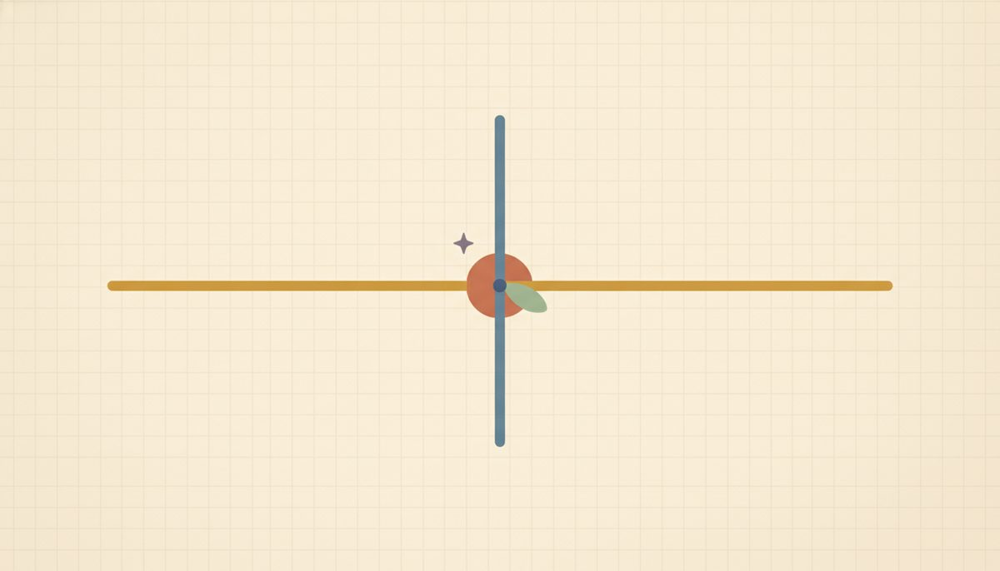

x-intercepts, graphing by intercepts & standard form

Two points fix a line, and the two easiest points to find are usually where the line crosses the axes. This lesson adds the x-intercept to the y-intercept you already know, uses the pair of them to graph a line fast, and introduces standard form, Ax + By = C. That's the form lines often arrive in, where no slope or intercept is sitting in plain sight.
Start with what an intercept actually is: the spot where the line crosses an axis. On the x-axis you haven't gone up or down at all, so y = 0 there. On the y-axis you haven't gone across at all, so x = 0 there. That gives a clean rule for finding either one: set the other coordinate to 0 and solve for what's left.
You already do half of this. Back in Lesson 5.4 you found the y-intercept by putting x = 0 (that's f(0) = b). The x-intercept is the very same move with the roles swapped: put y = 0 and solve for x.
Two intercepts are two points, and two points draw a line, so plot the pair and connect them. A safety habit worth keeping is to compute a third point as a checkpoint. If all three line up, you can trust the picture; if the third one misses, recheck your arithmetic before you draw, because a wrong graph is worse than no graph.
Now standard form, Ax + By = C, where A, B, and C are integers (and A is kept positive by convention). It treats x and y even-handedly, with neither one solved for. That makes it tidy for reading off intercepts but useless for reading slope until you rearrange it.
To get the intercepts, the same zero-out move works: set y = 0 for the x-intercept, set x = 0 for the y-intercept. To get the slope, isolate y, the Unit-2 move: Ax + By = C becomes y = −(A/B)x + C/B, so the slope is −A/B and the y-intercept is C/B.
New words
- 5.6.d1 x-intercept: the point (a, 0) where the line crosses the x-axis. Because every point on the x-axis has y = 0, you find it by setting y = 0 and solving for x. (Mirror of the y-intercept (0, b) from 5.4, where x = 0.)
- 5.6.d2 Standard form: Ax + By = C, with A, B, C integers (and A ≥ 0 by convention). It treats x and y even-handedly, with neither solved for. To read slope and y-intercept, solve for y; to graph fast, use the two intercepts.
Worked example
-
5.6.w1 Find the x-intercept of y = 2x - 6. Set y = 0: $$\begin{aligned} &0 = 2x - 6 \\ &\Rightarrow\; 2x = 6 \\ &\Rightarrow\; x = 3 \end{aligned}$$ So the x-intercept is (3, 0). For contrast, its y-intercept is (0, −6), found by putting x = 0. Notice both intercepts come from the same move: zero out the other variable.
-
5.6.w2 Graph y = -2x + 4 from its two intercepts. The x-intercept: set y = 0 → 0 = −2x + 4 → x = 2 → (2, 0). The y-intercept: set x = 0 → y = 4 → (0, 4) (or just read b = 4). Plot those two and draw the line. Checkpoint third point at x = 1: −2(1) + 4 = 2, so (1, 2), which lines up with the two intercepts, so the graph is trustworthy. Here's the line through the two intercepts, with the checkpoint marked 5.6.f1.
| x | y = -2x + 4 | point |
|---|---|---|
| 0 | 4 | (0,4) y-intercept |
| 1 | 2 | (1,2) checkpoint |
| 2 | 0 | (2,0) x-intercept |
-
5.6.w3 Standard form 3x + 4y = 12: read both intercepts, then convert to slope-intercept. The x-intercept (y = 0): 3x = 12 → x = 4 → (4, 0). The y-intercept (x = 0): 4y = 12 → y = 3 → (0, 3). Now solve for y: 3x + 4y = 12 → 4y = -3x + 12 → $$y = -\tfrac34 x + 3$$ so the slope is −3/4 and the y-intercept is (0, 3), which matches the intercept we just found, a nice confirmation.
-
5.6.w4 Convert y = (3/4)x - 2 to standard form. Clear the fraction first by multiplying everything by 4, then gather x and y on the left: $$\begin{aligned} &y = \tfrac34 x - 2 \\ &\Rightarrow\; 4y = 3x - 8 \\ &\Rightarrow\; 3x - 4y = 8 \end{aligned}$$ Standard form keeps A positive, so we wrote it with the x-term positive. Check: at x = 0, −4y = 8 → y = −2, the original intercept, so the conversion held.
-
5.6.w5 Read intercepts straight off standard form 2x + 5y = 10. Think of it as a budget: $2 items and $5 items totaling $10. The x-intercept: 2x = 10 → (5, 0) (all $2 items, five of them). The y-intercept: 5y = 10 → (0, 2) (all $5 items, two of them). Standard form is tidy for this, since each intercept just divides C by one coefficient.
It's easy to zero out the wrong variable: for the x-intercept you set y = 0, not x = 0. If you set x = 0 you'll get the y-intercept by mistake, so anchor it to the picture: on the x-axis, how far up are you? Zero. So y = 0 there.
A second slip is reading slope off standard form before solving for y: from 3x + 4y = 12 the slope is not 3; it's −A/B = −3/4, and only after you isolate y. Whenever you go to read a slope, first ask whether the equation is solved for y yet.
And one edge case: a line through the origin, like y = 2x, crosses both axes at the same point (0, 0), so the two-intercept method gives you only one point; just plug in any other x to get a second.
Check yourself
- 5.6.c1 For 5x + 2y = 20, find both intercepts and say which two points you'd plot to graph it. (x-intercept: 5x = 20 → (4, 0); y-intercept: 2y = 20 → (0, 10); plot (4, 0) and (0, 10).)
- 5.6.c2 A classmate sets x = 0 to find the x-intercept. What did they actually find, and what should they have done? (Setting x = 0 gives the y-intercept; to find the x-intercept they should set y = 0 and solve for x.)
- 5.6.c3 Put y = (2/3)x - 1 into standard form Ax + By = C with integer coefficients. What are A, B, and C? (Multiply by 3: 3y = 2x − 3 → 2x − 3y = 3, so A = 2, B = −3, C = 3.)
You can now find an x-intercept by setting y = 0, graph a line fast from its two intercepts with a third point as a checkpoint, and move between standard form and slope-intercept form in both directions.
The practice covers finding intercepts, converting in each direction, and graphing. Answers and the worked examples are there if one stalls you.
Find the x-intercept (set y = 0):
Reveal answerHide to problem 1
0 = 2x - 8 → x = 4 → (4, 0)Reveal answerHide to problem 2
0 = -x + 5 → x = 5 → (5, 0)Reveal answerHide to problem 3
0 = 3x + 12 → x = -4 → (-4, 0)Reveal answerHide to problem 4
0 = (1/2)x - 4 → x = 8 → (8, 0)Find BOTH intercepts of the standard-form line:
Reveal answerHide to problem 5
x-int (3, 0), y-int (0, 4)Reveal answerHide to problem 6
x-int (5, 0), y-int (0, -2)Convert standard form to slope-intercept (solve for y); give slope and y-intercept:
Reveal answerHide to problem 7
y = -2x + 7; slope -2, y-intercept (0, 7)Reveal answerHide to problem 8
y = (3/4)x - 2; slope 3/4, y-intercept (0, -2)Convert to standard form Ax + By = C (integer coefficients, A ≥ 0):
Reveal answerHide to problem 9
-2x + y = 3 ⇒ 2x - y = -3Reveal answerHide to problem 10
multiply by 3: 3y = 2x - 3 ⇒ 2x - 3y = 3Graph from intercepts / mixed:
Reveal answerHide to problem 11
(4, 0) and (0, 10)Reveal answerHide to problem 12
slope = (-2 - 0)/(0 - 4) = 1/2; y = (1/2)x - 2.Looking back, the pieces of a line now hang together. A table (5.2) gives you points; the graph (5.1 and 5.2) shows them; the slope (5.3) is the steady rate between them; y = mx + b (5.4) lets you read the slope and intercept at a glance; point-slope (5.5) builds the equation from a point and a slope; and intercepts with standard form (5.6) graph a line fast when it isn't solved for y.
Through all of it, a line is a function: y = mx + b and f(x) = mx + b are one object, and what makes it a line is a constant rate of change. Wherever a real context is attached, read m as the rate and b as the starting value. That reading is exactly what Unit 6 turns words into.